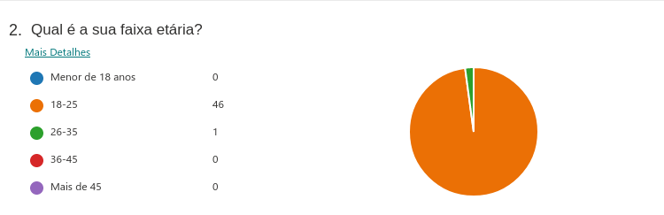
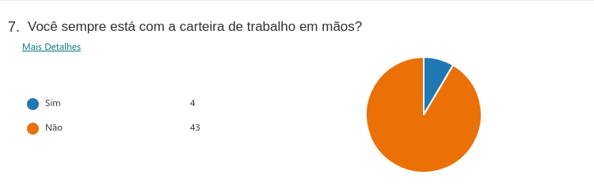
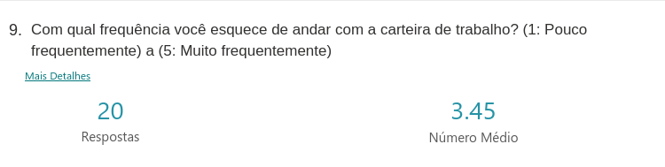
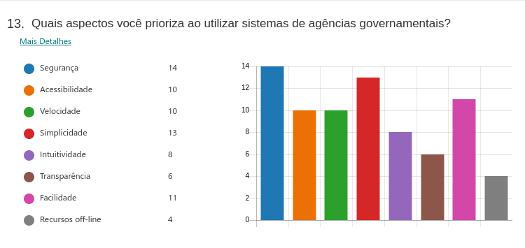
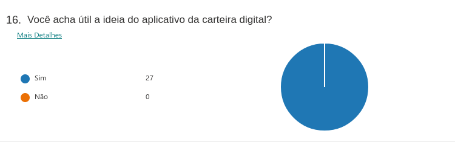

Elicitação de requistos
1. Introspecção
1.1 Introdução:
Introspecção é uma técnica muito rica e profunda. Consiste em entender quais propriedades o sistema deve possuir para que seja um sucesso. Demanda o Engenheiro de Requisitos imaginar o que ele gostaria, se ele tivesse que desempenhar uma dada tarefa, com os equipamentos disponíveis e demais recursos. Pode ser muito útil, mas tem o problema de que a introspecção de um especialista, de uma área de atuação diferente, não ser adequada para refletir a experiência/atuação real dos interessados.
1.2 Resultado:
- Criar uma conta (carteira de trabalho)
- Logar com essa conta
- Armazenar dados offline
- Pedir alteração da informação do contrato caso esteja errada
- Gerar em CTPS em pdf com contratos escolhidos pelo usuário
- Visualizar contratos da carteira de trabalho
- Visualizar perfil e atualizar um perfil
- Montar um currículo
- Empresas acessar o perfil e contratos do indivíduo para contratação
- Anotações no contrato
2. Questionário
2.1 Introdução
O questionário, ou pesquisa, é um método que consiste na aplicação de um questionário às partes interessadas e posterior análise da resposta. É uma técnica que tem como objetivo coletar informações quantitativas e qualitativas de um público alvo numeroso.
2.2 Metodologia
Foram elaboradas 17 questões relacionadas a carteira de trabalho digital, sendo que, as 8 primeiras, todas as pessoas que estiverem preenchendo o questionário devem responder. Depois dessas 8, dividimos o questionário em duas seções diferentes onde em uma delas a pessoa já teria utilizado o aplicativo e, em outra, a pessoa não o teria utilizado.
2.3 Resultados
No total foram coletadas 47 respostas.
Pergunta 1

Pergunta 2

Pergunta 3

Pergunta 4

Pergunta 5

Pergunta 6

Pergunta 7

Pergunta 8

Perguntas para quem já utilizou o app
Pergunta 9

Pergunta 10

Pergunta 11

Pergunta 12

Pergunta 13

Pergunta 14
Quais aspectos você acredita que precisam melhorar no app?
Algumas respostas:
- Os dados mostrados quando não há nenhum registro;
- Reportar divergências de informações no contrato não funciona;
- O design da carteira gerada em PDF;
- Tamanho do App. Como a carteira de trabalho não tem tantas atualizações, poderia ser facilitado o acesso online, sem necessidade de baixar o app;
- Diminuir a quantidade de bugs;
- Melhorar divulgação do app;
Perguntas para quem nunca utilizou o app:
Pergunta 15

Pergunta 16

Pergunta 17

2.4 Conclusão
De acordo com as respostas do questionário, podemos perceber que a Carteira de Trabalho Digital é um aplicativo considerado muito útil pela maioria das pessoas. Percebe-se também que as pessoas quase não carregam esse documento físico, não estando preparadas para alguma situação inesperada. Dentre as funcionalidades principais, as mais utilizadas são: emitir e compartilhar a carteira em pdf, visualizar contratos e verificar registros de trabalho. Também foi notado que nem tantas pessoas tinham o conhecimento sobre a existência do aplicativo e isso desmotiva os desenvolvedores a estarem atualizando a aplicação. Logo, os requisitos não são constatemente reavaliados.
2.5 Requisitos
Depois de avaliar e tirar a conclusão sobre o questionário, pudemos levantar alguns requisitos da aplicação:
| Número | Requisito | Tipo de Requisito |
|---|---|---|
| 1 | Permitir a emissão da carteira de trabalho em PDF | Funcional |
| 2 | Visualizar contratos de trabalhos antigos e atuais | Funcional |
| 3 | Verificar registros de trabalho(férias, recisão de contrato e etc.) | Funcional |
| 4 | Reportar divergências de informaçoes do contrato | Funcional |
| 5 | Possuir login integrado com o sistema GOV.br | Funcional |
| 6 | Melhorar o design da carteira em PDF | Não Funcional |
| 7 | Diminuir o tamanho do app, ou fazer uma versão web | Não Funcional |
| 8 | Ser seguro | Não Funcional |
| 9 | Ser acessível | Não Funcional |
| 10 | Ser simples | Não Funcional |
| 11 | Ser de fácil utilização | Não Funcional |
3. Storytelling
3.1 Introdução
Storytalling ou contador de histórias, é definida como uma técnica de elicitação de requisitos, que tem como características a criação de histórias que ilustram as necessidades dos usuários, que tem como característica o compartilhamento de conhecimento.
3.2 Storytelling
3.2.1 André Stuart Pereira:
André é um jovem, de 25 anos, desempregado, muito animado para encontrar um novo emprego. André acorda pela manhã e já está navegando pela internet a procura de vagas de emprego, mas sem muita sorte, uma vez que, a maioria das vagas pedem requisitos que o André não possui. Desanimado com a procura de um novo emprego, João, amigo de André liga, dizendo que na empresa dele de arquitetura tem vagas e ele conseguiu marcar uma entrevista para o André.
André está indo para a entrevista, chegando lá, a secretaria pediu para que André apresentasse a sua carteira de trabalho, porém, ele percebeu que havia esquecido a sua carteira de trabalho. Já estava prestes a desistir, felizmente a secretária o ajudou, ela disse pra ele que hoje já existe um aplicativo super prático que dar acesso a sua carteira de trabalho, com isso André conseguiu apresentar a sua carteira de trabalho, fazer a entrevista e arrumar o seu novo emprego.
3.2.2 Fernando Fernandes Sousa:
Fernando Fernandes Sousa Fernando sempre foi um funcionário exemplar em seu departamento, levantava cedo para chegar no trabalho às 6:30 e sempre era o último funcionário a sair. Com isso, outra empresa o notou e quis convidá-lo a fazer parte de outra empresa, porém Fernando havia perdido sua carteira de trabalho, então tentou se manter na mesma empresa pedindo para que aumentassem seu salário.
Ao pedir o aumento, seu chefe não gostou da proposta já que estava com problemas financeiros na empresa. Ao obter esta informação Fernando decidiu então que iria mudar de empresa e prontamente procurou por sua carteira de trabalho.
Desanimado ao não encontrar a carteira, Fernando foi almoçar com um amigo para ter um tempo para pensar, durante o almoço o amigo em questão mostrou para Fernando que não era mais necessário ter uma carteira de trabalho física, apresentando então uma carteira virtual, com a qual Fernando levou para a nova empresa e conseguiu ser contratado com sucesso.
4. Priorização MoSCoW
4.1. Introdução
A técnica de priorização MosCoW é uma técnica para determinar a prioridade de cada requisito em: must do: É estreitamente necessário ser feito para a entrega do projeto should do: São importantes, porém não têm a mesma importância do must do could do: São desejáveis, porém não são essenciais do ponto de vista estratégico wont do: São acordados os requisitos de menos importância do projeto, com menor retorno do investimento do produto final
4.2. Resultado

5. Bibliografia
- BARBOSA. Simone. SILVA. Bruno. 2010. Interação Humano-computador.
- VAZQUES. Carlos. SOMEIRA SIMÕES. Guilherme. Engenharia de Requisitos.
6. Versionamento
| Versão | Descrição | Data | Autor(es) | Revisor(es) |
|---|---|---|---|---|
| 1.0.0 | Criação do documento | 20/08/2021 | Liverson Paulo e Lucas Rodrigues | Giulia Lobo e Murilo Gomes |
| 1.1.0 | Criação da priorização | 20/08/2021 | Denniel William e Murilo Gomes | Liverson Paulo |